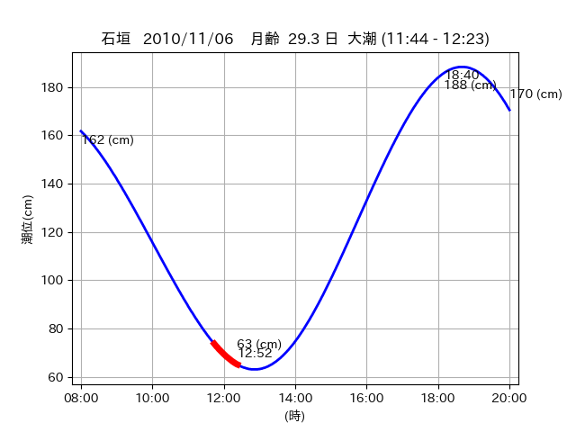

<!DOCTYPE html>
<html>
<head>
    
    <meta http-equiv="content-type" content="text/html; charset=UTF-8" />
    
        <script>
            L_NO_TOUCH = false;
            L_DISABLE_3D = false;
        </script>
    
    <style>html, body {width: 100%;height: 100%;margin: 0;padding: 0;}</style>
    <style>#map {position:absolute;top:0;bottom:0;right:0;left:0;}</style>
    <script src="https://cdn.jsdelivr.net/npm/leaflet@1.9.3/dist/leaflet.js"></script>
    <script src="https://code.jquery.com/jquery-3.7.1.min.js"></script>
    <script src="https://cdn.jsdelivr.net/npm/bootstrap@5.2.2/dist/js/bootstrap.bundle.min.js"></script>
    <script src="https://cdnjs.cloudflare.com/ajax/libs/Leaflet.awesome-markers/2.0.2/leaflet.awesome-markers.js"></script>
    <link rel="stylesheet" href="https://cdn.jsdelivr.net/npm/leaflet@1.9.3/dist/leaflet.css"/>
    <link rel="stylesheet" href="https://cdn.jsdelivr.net/npm/bootstrap@5.2.2/dist/css/bootstrap.min.css"/>
    <link rel="stylesheet" href="https://netdna.bootstrapcdn.com/bootstrap/3.0.0/css/bootstrap-glyphicons.css"/>
    <link rel="stylesheet" href="https://cdn.jsdelivr.net/npm/@fortawesome/fontawesome-free@6.2.0/css/all.min.css"/>
    <link rel="stylesheet" href="https://cdnjs.cloudflare.com/ajax/libs/Leaflet.awesome-markers/2.0.2/leaflet.awesome-markers.css"/>
    <link rel="stylesheet" href="https://cdn.jsdelivr.net/gh/python-visualization/folium/folium/templates/leaflet.awesome.rotate.min.css"/>
    
            <meta name="viewport" content="width=device-width,
                initial-scale=1.0, maximum-scale=1.0, user-scalable=no" />
            <style>
                #map_e9609d575a5e7e01fcfe376cdec06801 {
                    position: relative;
                    width: 2048.0px;
                    height: 1600.0px;
                    left: 0.0%;
                    top: 0.0%;
                }
                .leaflet-container { font-size: 1rem; }
            </style>
        
</head>
<body>
    
    
            <div class="folium-map" id="map_e9609d575a5e7e01fcfe376cdec06801" ></div>
        
</body>
<script>
    
    
            var map_e9609d575a5e7e01fcfe376cdec06801 = L.map(
                "map_e9609d575a5e7e01fcfe376cdec06801",
                {
                    center: [24.365, 123.957],
                    crs: L.CRS.EPSG3857,
                    ...{
  "zoom": 12,
  "zoomControl": true,
  "preferCanvas": false,
}

                }
            );

            

        
    
            var tile_layer_daa66c7320e93ff67d8c41b3c4efb28e = L.tileLayer(
                "https://cyberjapandata.gsi.go.jp/xyz/seamlessphoto/{z}/{x}/{y}.jpg",
                {
  "minZoom": 0,
  "maxZoom": 18,
  "maxNativeZoom": 18,
  "noWrap": false,
  "attribution": "\u5730\u7406\u9662\u5730\u56f3",
  "subdomains": "abc",
  "detectRetina": false,
  "tms": false,
  "opacity": 1,
}

            );
        
    
            tile_layer_daa66c7320e93ff67d8c41b3c4efb28e.addTo(map_e9609d575a5e7e01fcfe376cdec06801);
        
    
            var marker_00a96c54bb4a1d685eaac83f6110b524 = L.marker(
                [24.365, 123.9552],
                {
}
            ).addTo(map_e9609d575a5e7e01fcfe376cdec06801);
        
    
            var icon_2ef5f154334f37d42856a3e1cb3b7203 = L.AwesomeMarkers.icon(
                {
  "markerColor": "orange",
  "iconColor": "white",
  "icon": "info-sign",
  "prefix": "glyphicon",
  "extraClasses": "fa-rotate-0",
}
            );
        
    
        var popup_f40f748323e02806c00f186e0ecb6c5e = L.popup({
  "maxWidth": "100%",
});

        
            
                var html_35e5f950c6de06794c182f8ecb983109 = $(`<div id="html_35e5f950c6de06794c182f8ecb983109" style="width: 100.0%; height: 100.0%;"><table><tr><td></td></tr><tr><td><center>20101106 No.1 </center></table></td></tr></table</div>`)[0];
                popup_f40f748323e02806c00f186e0ecb6c5e.setContent(html_35e5f950c6de06794c182f8ecb983109);
            
        

        marker_00a96c54bb4a1d685eaac83f6110b524.bindPopup(popup_f40f748323e02806c00f186e0ecb6c5e)
        ;

        
    
    
                marker_00a96c54bb4a1d685eaac83f6110b524.setIcon(icon_2ef5f154334f37d42856a3e1cb3b7203);
            
    
            var poly_line_ed987d36f9328e5b5cb981ec6064cbed = L.polyline(
                [[24.365, 123.9552], [24.3712, 123.9511]],
                {"bubblingMouseEvents": true, "color": "#FF00FF", "dashArray": null, "dashOffset": null, "fill": false, "fillColor": "#FF00FF", "fillOpacity": 0.2, "fillRule": "evenodd", "lineCap": "round", "lineJoin": "round", "noClip": false, "opacity": 1.0, "smoothFactor": 1.0, "stroke": true, "weight": 3}
            ).addTo(map_e9609d575a5e7e01fcfe376cdec06801);
        
    
            var marker_684542f8ba9b901ab19ec7b3e1ab9bfb = L.marker(
                [24.3685, 123.9536],
                {
}
            ).addTo(map_e9609d575a5e7e01fcfe376cdec06801);
        
    
            var icon_2cfe1d9c63a9d7a710f267ec07db1a97 = L.AwesomeMarkers.icon(
                {
  "markerColor": "orange",
  "iconColor": "white",
  "icon": "info-sign",
  "prefix": "glyphicon",
  "extraClasses": "fa-rotate-0",
}
            );
        
    
        var popup_ce270d5781409d12b3312029bb7f9b9a = L.popup({
  "maxWidth": "100%",
});

        
            
                var html_00e46cc472bf2ea75ade3c2c17f9c7f6 = $(`<div id="html_00e46cc472bf2ea75ade3c2c17f9c7f6" style="width: 100.0%; height: 100.0%;"><table><tr><td></td></tr><tr><td><center>20101106 No.2 </center></table></td></tr></table</div>`)[0];
                popup_ce270d5781409d12b3312029bb7f9b9a.setContent(html_00e46cc472bf2ea75ade3c2c17f9c7f6);
            
        

        marker_684542f8ba9b901ab19ec7b3e1ab9bfb.bindPopup(popup_ce270d5781409d12b3312029bb7f9b9a)
        ;

        
    
    
                marker_684542f8ba9b901ab19ec7b3e1ab9bfb.setIcon(icon_2cfe1d9c63a9d7a710f267ec07db1a97);
            
    
            var poly_line_d8056ed9791100a41244be452d6225c4 = L.polyline(
                [[24.3685, 123.9536], [24.3632, 123.9512]],
                {"bubblingMouseEvents": true, "color": "#00FFFF", "dashArray": null, "dashOffset": null, "fill": false, "fillColor": "#00FFFF", "fillOpacity": 0.2, "fillRule": "evenodd", "lineCap": "round", "lineJoin": "round", "noClip": false, "opacity": 1.0, "smoothFactor": 1.0, "stroke": true, "weight": 3}
            ).addTo(map_e9609d575a5e7e01fcfe376cdec06801);
        
    
            var marker_c07031e03dd31107d41a68068d3ef85e = L.marker(
                [24.368, 123.9584],
                {
}
            ).addTo(map_e9609d575a5e7e01fcfe376cdec06801);
        
    
            var icon_d6f2276aeac1d3ce1f0924abfe647e52 = L.AwesomeMarkers.icon(
                {
  "markerColor": "orange",
  "iconColor": "white",
  "icon": "info-sign",
  "prefix": "glyphicon",
  "extraClasses": "fa-rotate-0",
}
            );
        
    
        var popup_cd078705a4cb79ca5d985f39664803ab = L.popup({
  "maxWidth": "100%",
});

        
            
                var html_94e7e78e9c1e9165ba80a81874f680c8 = $(`<div id="html_94e7e78e9c1e9165ba80a81874f680c8" style="width: 100.0%; height: 100.0%;"><table><tr><td></td></tr><tr><td><center>20101106 No.3 </center></table></td></tr></table</div>`)[0];
                popup_cd078705a4cb79ca5d985f39664803ab.setContent(html_94e7e78e9c1e9165ba80a81874f680c8);
            
        

        marker_c07031e03dd31107d41a68068d3ef85e.bindPopup(popup_cd078705a4cb79ca5d985f39664803ab)
        ;

        
    
    
                marker_c07031e03dd31107d41a68068d3ef85e.setIcon(icon_d6f2276aeac1d3ce1f0924abfe647e52);
            
    
            var poly_line_5d3d8228c6aa2da5bcddb01fe7724176 = L.polyline(
                [[24.368, 123.9584], [24.363, 123.955]],
                {"bubblingMouseEvents": true, "color": "#00FFFF", "dashArray": null, "dashOffset": null, "fill": false, "fillColor": "#00FFFF", "fillOpacity": 0.2, "fillRule": "evenodd", "lineCap": "round", "lineJoin": "round", "noClip": false, "opacity": 1.0, "smoothFactor": 1.0, "stroke": true, "weight": 3}
            ).addTo(map_e9609d575a5e7e01fcfe376cdec06801);
        
</script>
</html>